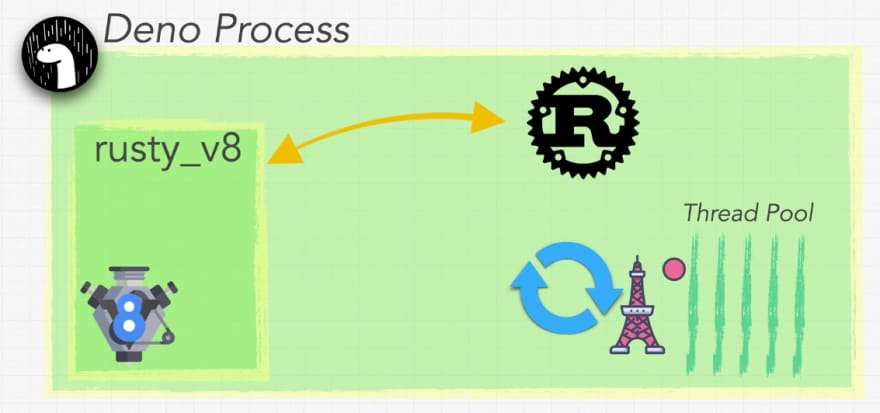

Say hello to deno!
Narayanaperumal Gurusamy
ngurusam@akamai.comWhat is Deno?
- Deno is a simple, modern, and secure runtime for JavaScript and TypeScript. Deno works in the V8 Chromium Engine and is built in Rust programming language.
- Deno is created by the author of Node.js [Ryan Dahl.]
Main features of Deno
- Deno is secure by default. It has no file, network, or environment access unless explicitly enabled.
- It supports TypeScript out of the box. But can run both TypeScript (.ts) files, or JavaScript (.js) files.
- It ships only a single executable file. Given a URL to a Deno program, it is runnable with nothing more than the ~15 megabytes zipped executable.
- It explicitly takes on the role of both runtime and package manager. It uses a standard browser-compatible protocol for loading modules: URLs.
Cont...
- It has a set of reviewed standard modules that are guaranteed to work with Deno
- As Node Deno emphasizes event-driven architecture, providing a set of non-blocking core IO utilities, along with their blocking versions.
- It provides built-in tooling like unit testing, dependency inspector (deno info), code formatting (deno fmt), and linting to improve the developer experience.
- It includes browser compatible APIs. APIs are compatible with web standards so you can run in the browser. The code can run on the client as well as the server.
how Deno works behind the scenes?
The building blocks of Deno are Rust, Tokio, and V8.
Rust
Rust is a multi-paradigm programming language focused on performance and safety, especially safe concurrency. Rust is syntactically similar to C++ but provides memory safety without using garbage collection. Read more in this thread.
Tokio
Tokio is an event-driven, non-blocking I/O platform for writing asynchronous applications with the Rust programming language.
V8
V8 is a JavaScript/WebAssembly engine by Google. Written in C++, it is also used most notably in Google Chrome and Node.js.
Package Management
There has been a radical rethink regarding the way package management works in Deno. Rather than relying on a central repository, it is decentralized. Anyone can host a package just like anyone can host any type of file on the web.
/**
* local.ts
*/
import { add, multiply } from "./arithmetic.ts";
function totalCost(outbound: number, inbound: number, tax: number): number {
return multiply(add(outbound, inbound), tax);
}
console.log(totalCost(19, 31, 1.2));
console.log(totalCost(45, 27, 1.15));
/**
* Output
*
* 60
* 82.8
*/
/**
* remote.ts
*/
import {
add,
multiply,
} from "https://x.nest.land/ramda@0.27.0/source/index.js";
function totalCost(outbound: number, inbound: number, tax: number): number {
return multiply(add(outbound, inbound), tax);
}
console.log(totalCost(19, 31, 1.2));
console.log(totalCost(45, 27, 1.15));
/**
* Output
*
* 60
* 82.8
*/
Summary of Deno Architecture
- The building blocks of Deno are Rust, Tokio, and V8.
- On the front, we write JavaScript and Typescript. Deno automatically compiles Typescript to JavaScript that is feed to the V8 engine.
- V8 engine communicates with Rust backend via the Rusty V8.
- Deno’s backend is written in Rust.
- And Tokio allows Deno to use a threat pool and workers to do work for us.
- There has been a radical rethink regarding the way package management works in Deno. Rather than relying on a central repository, it is decentralized.
Security
- The advantage of Deno is in its security. Deno is written in Rust and it is, by default, secure.
- All Deno programs are run in a sandbox without access to the disk, network, or ability to spawn subprocesses.
- To grant the program access, we can use special flags when running the program.
-A, --allow-all : Allow all permissions
--allow-env : Allow environment access
--allow-hrtime : Allow high-resolution time measurement.
--allow-net=<allow-net> : Allow network access
--allow-plugin : Allow loading plugins
--allow-read=<allow-read> : Allow file system read access.
--allow-run : Allow running subprocesses
--allow-write=<allow-write> : Allow file system write access.
Hands-on Deno
Get Deno
-
The easiest way to install Deno is to use the deno_install
scripts. You can do this on Linux or macOS with:
curl -fsSL https://deno.land/x/install/install.sh | sh -
Windows users can leverage Chocolatey:
choco install deno
Simple Example
Deno uses .js and .ts file extensions.
// date_time.js
console.log(new Date());
// Let’s run the code:
// deno run date_time.js
// Results:
// 2020-07-10T02:20:31.298Z
args
// ask_details.ts
interface PersonDetails {
name: string;
age: number;
phone: string;
}
function getDetails(details: any[]): PersonDetails {
return {name: details[0], age: details[1], phone: details[2]};
}
console.log(getDetails(Deno.args));
// deno run ask_details.ts "Narayanaperumal Gurusamy" 10 87780-97665
// { name: "Narayanaperumal Gurusamy", age: "10", phone: "87780-97665" }
Http Server
// http_server.js
import { serve } from "https://deno.land/std/http/server.ts";
const server = serve({ port: 5000 });
console.log("Listening to port 5000 on http://localhost:5000");
for await (const server_request of server) {
server_request.respond({ body: "Deno server created\n" });
}
// deno run --allow-net http_server.js
Reading from a File
- Deno's runtime API provides the Deno.readTextFile and Deno.writeTextFile asynchronous functions for reading and writing entire text files.
- Like many of Deno's APIs, synchronous alternatives are also available. See Deno.readTextFileSync and Deno.writeTextFileSync.
- Use --allow-read and --allow-write permissions to gain access to the file system.
// open file an returns Promise
const text = Deno.readTextFile("./sample.txt");
text.then((response) => console.log(response));
Writing to a File
/**
* write.ts
*/
const write = Deno.writeTextFile("./hello.txt", "Hello World!");
write.then(() => console.log("File written to ./hello.txt"));
Tools
Deno’s tools are new and some are rudimentary, but a documented “standard” approach has benefits.
- REPL (read-eval-print-loop)
- Dependency Inspector
- Linter
- Test Runner
- V8 Debugger
- Code Formatter
- Documentation Generator
- Script Bundling